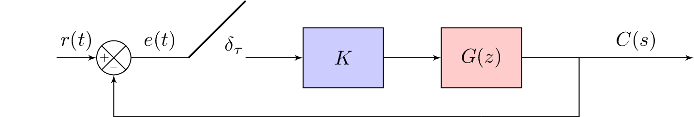

\documentclass{standalone}
\usepackage{tikz}
\usetikzlibrary{positioning}
\usetikzlibrary{shapes,arrows,calc}
\usetikzlibrary{decorations.text}
\tikzset{add/.style n args={4}{
minimum width=6mm,
path picture={
\draw[black]
(path picture bounding box.south east) -- (path picture bounding box.north west)
(path picture bounding box.south west) -- (path picture bounding box.north east);
\node at ($(path picture bounding box.south)+(0,0.13)$) {\tiny #1};
\node at ($(path picture bounding box.west)+(0.13,0)$) {\tiny #2};
\node at ($(path picture bounding box.north)+(0,-0.13)$) {\tiny #3};
\node at ($(path picture bounding box.east)+(-0.13,0)$) {\tiny #4};
}
}
}
\begin{document}
%\begin{figure}
%\centering
\tikzstyle{block} = [draw, fill=blue!20, rectangle, minimum height=3em, minimum width=4em]
\tikzstyle{controller} = [draw, fill=red!20, rectangle, minimum height=3em, minimum width=4em]
\tikzstyle{sum} = [draw, fill=blue!20, circle, node distance=1cm]
\tikzstyle{input} = [coordinate]
\tikzstyle{output} = [coordinate]
\tikzstyle{sampleSP} = [coordinate]
\tikzstyle{sampleEP} = [coordinate]
\tikzstyle{otherPoint} = [coordinate]
\begin{tikzpicture}[auto, >=latex']
% Nodes
\node [input] (input) {};
%\node [sum, right = 1cm of input] (sum) {};
\node[draw,circle,add={--}{+}{}{},right of= input](sum){};
\node [sampleSP, right = 1cm of sum] (sumSP) {};
\node [sampleEP, right = 1cm of sumSP] (sumEP) {};
\node [sampleEP, above = 1cm of sumEP] (sumEPTOP) {};
\node [block, right = 1 cm of sumEP] (systemK) {$K$};
%\node [block, right = 1 cm of systemK] (system2) {$\frac{1-e^{-s}}{s}$};
%\node [controller, right = 1 cm of systemK] (system3) {$\frac{1}{s+1}$};
\node [controller, right = 1 cm of systemK] (systemEND) {$G(z)$};
\node [otherPoint,right = 1 cm of systemEND] (branchPoint) {};
\node [otherPoint,below = 1 cm of systemEND] (belowsystem) {}; %{$\frac{1}{Ts+1}$};
%\node [block, right = 1cm of system] (system2) {$\frac{1}{Ts+1}$};
\node [output, right = 2cm of branchPoint] (outputY) {};
\node [input, below = 0.5cm of systemEND] (m) {};
% \node [block, right = 0.75 of belowsystem] (systemH) {$H_1(s)$};
% Second Sampler Point
% \node [sampleSP, left = 1cm of systemH] (sysHSP2) {};
% \node [sampleEP, left = 1cm of sysHSP2] (sysHEP2) {};
% \node [sampleEP, above = 1cm of sysHEP2] (sumEPTOP2) {};
% Second block
% \node [block, left = 1.5cm of sysHEP2] (systemH2) {$H_2(s)$};
% % Arrows
\draw [draw,->] (input) -- node {$r(t)$} (sum);
% % Arrows for first sampler
\draw [-] (sum) -- node {$e(t)$} (sumSP);
\draw [-,thick] (sumEPTOP) -- node {$\delta_\tau$} (sumSP);
% Arrows for block diagrams
\draw [->] (sumEP) -- node {} (systemK);
\draw [->] (systemK) -- node {} (systemEND);
%\draw [->] (system2) -- node {} (systemEND);
%\draw [->] (system3) -- node {} (systemEND);
% %Arrows for second sampler (bottom)
% \draw [-] (sysHSP2)-- node {$M(s)$} (systemH);
% \draw [-,thick] (sysHSP2) -- node {$\delta_\tau$} (sumEPTOP2);
% %\draw [->] (sumEP) -- node {$M^\ast(s)$} (systemH);
% % \draw [->] (system) -- (system2);
% G(s) to branchpoint
\draw [-] (systemEND) -- (branchPoint);
\draw [->] (branchPoint) -- node (y) {$C(s)$}(outputY);
%\draw [-] (outputY) |- (system) {};
\draw [-] (branchPoint) |- (m) {} ;
% \draw [<-] (systemH2) -- node {$M^\ast(s)$} (sysHEP2);
% \draw [->] (systemH2) -| (sum); %{$-$} node [near end] {} (sum);
\draw [->] (m) -| node[pos=0.99] {} node [near end] {} (sum); %{$-$} node [near end] {} (sum);
\end{tikzpicture}
%\end{figure}
\end{document}Created by David Li